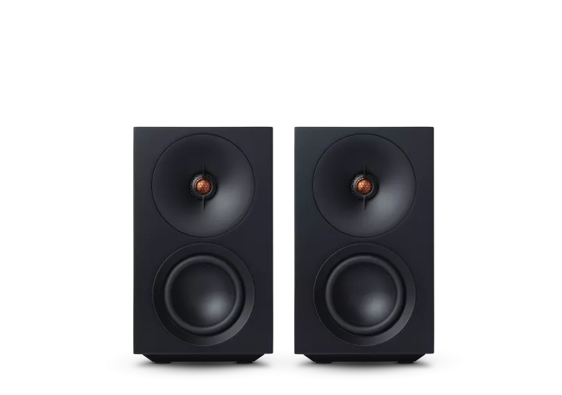
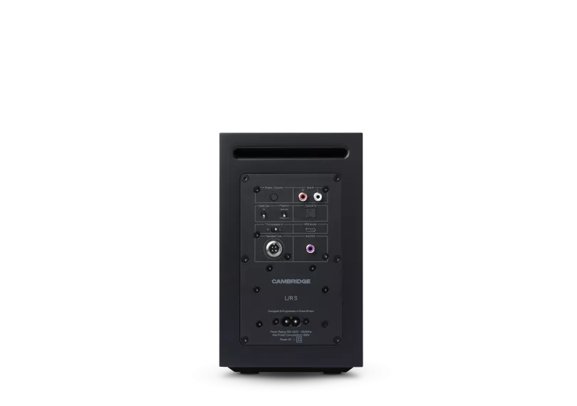
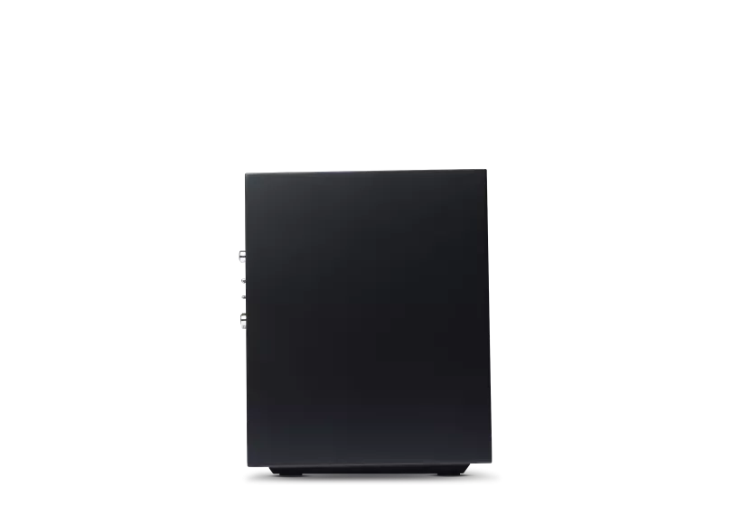
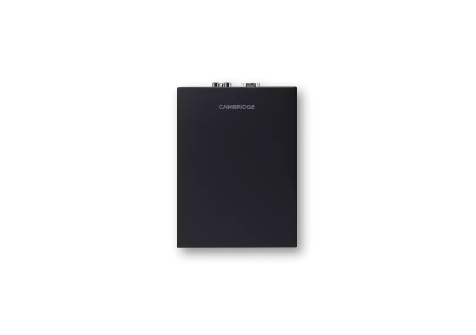
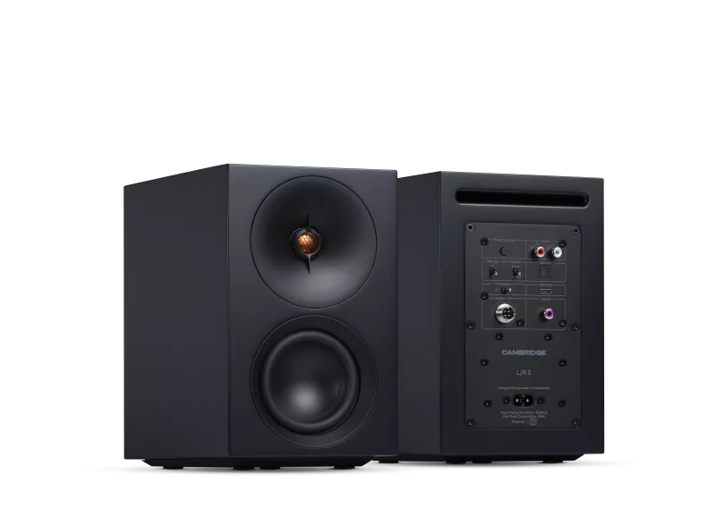
L/R S
L/R Sは、小さなスペースに大きく個性的なサウンドをもたらします。デスクトップ、棚、日常のリスニングのために設計され、シンプルな有線接続と必要に応じた簡単なBluetooth接続を提供。温かみのあるバランス、クリスプなディテール、自信あるデザインで、家の中のあらゆる場所を音楽が生き生きと感じられる場所に変えます。
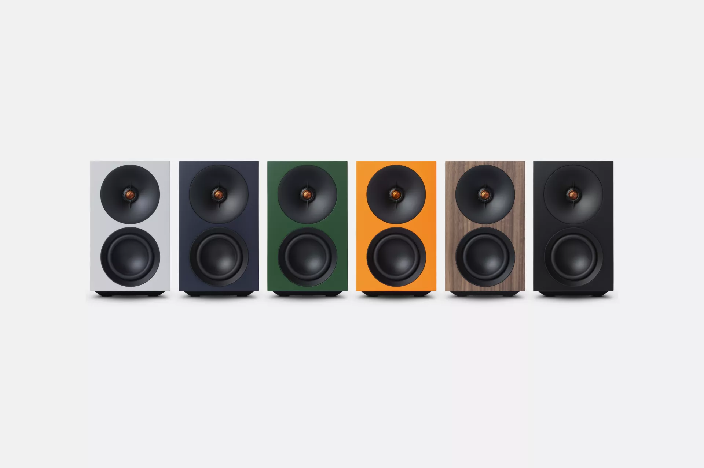
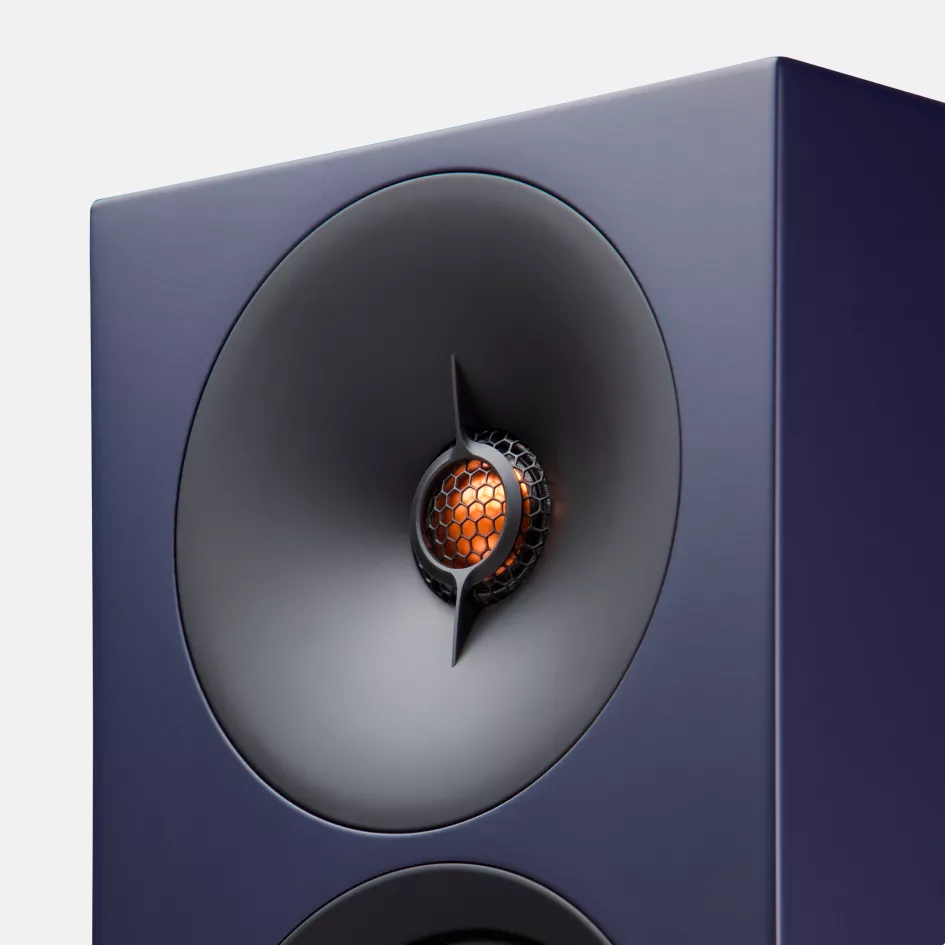
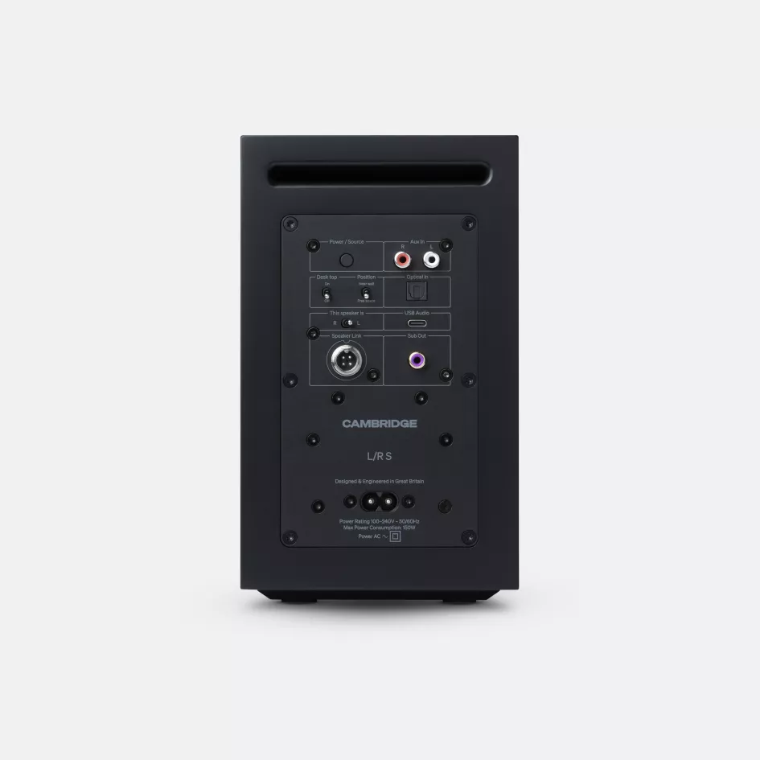
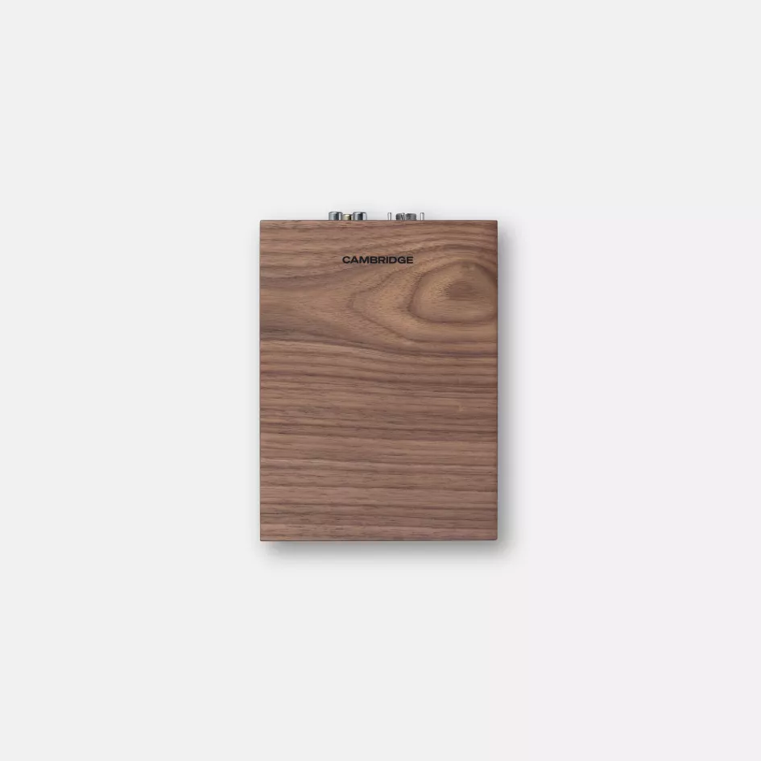
どこに置いてもクリアなサウンド
コンパクトながらも高性能なL/R Sは、そのサイズを超えたバランスの取れた明瞭なオーディオを自信を持って届けます。メインの音楽システムとして、コンピュータのアップグレードとして、プレイリストの格上げとして — デスクトップ、スタンド、棚に臨場感と精度をもたらします。
あなたの音楽を、すぐに、手軽に
一度ペアリングしてプレイを押すだけ — アプリもセットアップも不要。Bluetooth aptX HDと多彩な有線入力を備えたL/R Sは、どなたでも簡単にリスニングできます。温かく即座に広がるサウンドが、どんな接続方法でも豊かで魅力的に感じられます。
暮らしのリズムに合わせて
集中する作業セッションから料理中のプレイリスト、友人とのトラック共有まで、L/R Sは柔軟に対応。コンパクトなフットプリントから驚くほど大きなサウンドを届け、座って聴いても、家の中を移動しても、音楽を魅力的に保ちます。
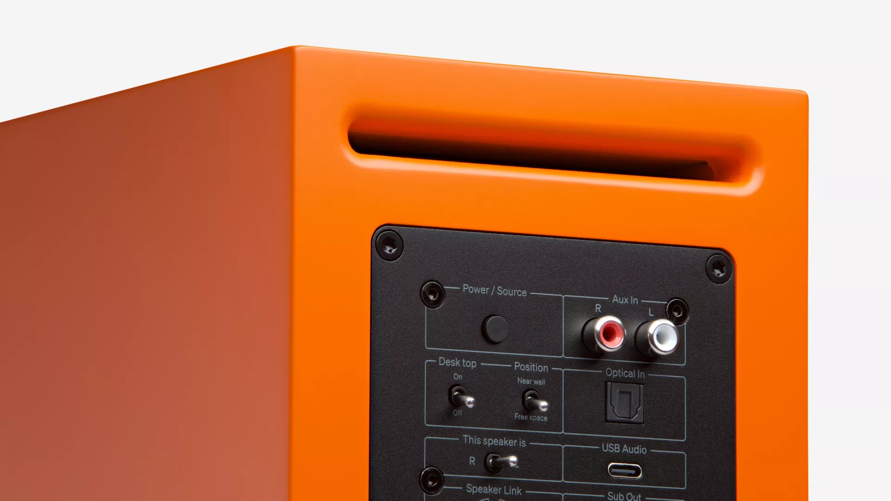
「Cambridge Audioは、オーディオ企業がクラリティとサウンドクオリティをどこまで追求できるか、その限界を押し広げ続けている」
卓越のエンジニアリング
あらゆるリスニングレベルでバランスの取れたサウンド
DynamEQは音量の変化に応じて低域と高域を繊細に調整し、静かなリスニングでも大音量でも自然なバランスと温かみを維持。設定を一切触ることなく、あらゆるトラックを豊かで自信に満ちたサウンドに保ちます。
フォーカスとディテールのための専用ドライバー
ロングスロー3インチウーファーが、精密に設計されたアルミニウムツイーターとウェーブガイドと連携し、クリーンなボーカル、明瞭な低音、クリスプなディテールを実現。至近距離でも驚くほど広大なサウンドステージを生み出し、繊細なテクスチャーまで明らかにします。
小さなスペースに最適化
デスクトップモードとルーム配置モードがL/R Sをあなたの環境に合わせて調整し、オプションのチルトスタンドがサウンドを正確に方向づけます。リアルな部屋のために設計されたL/R Sは、デスク、サイドボード、キッチンカウンターのどこに置いても必然的にフィットします。
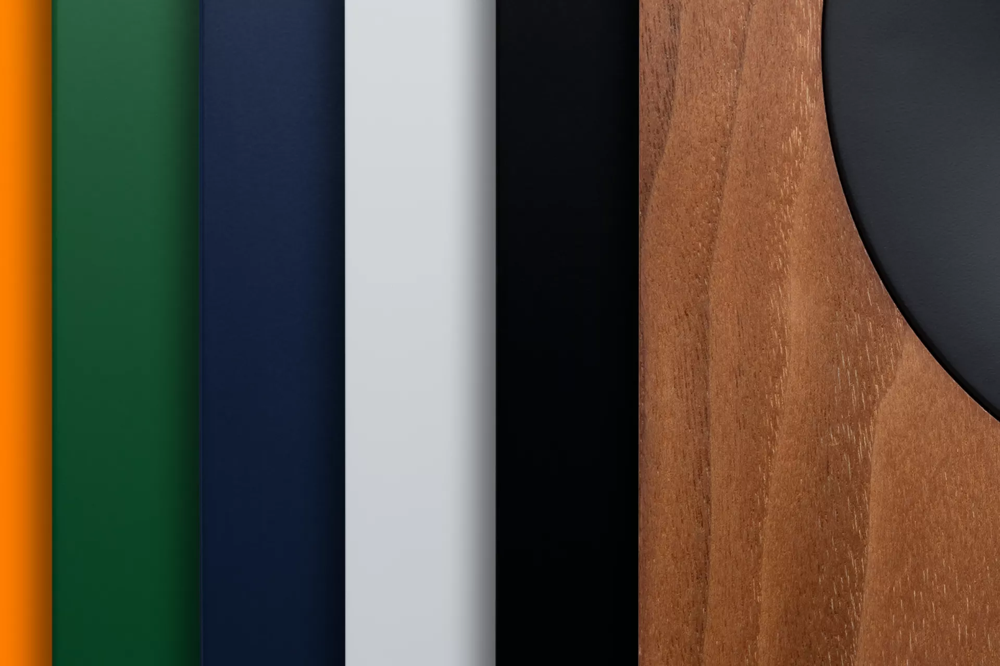
あらゆる家に似合うスタイル
L/R Sは、コンパクトなフットプリントに控えめでコンテンポラリーなデザインを融合。大胆なオレンジから繊細なナチュラルウッドまで、6つの美しいフィニッシュから選べ、オプションのチルトスタンドと合わせて、あらゆる家に目的意識を添えます。
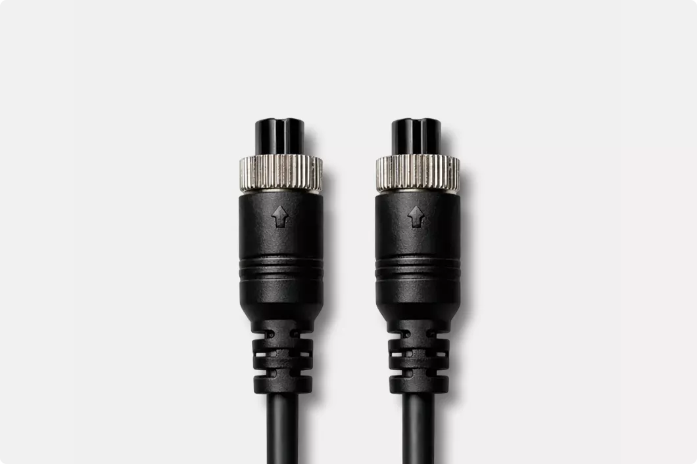
L/R S スピーカー接続
スピーカー間の接続は、付属の2mツーウェイ ハイレベルシグナルケーブルで行い、あらゆる環境で堅牢で手間のかからない接続を実現。スタンドや広いスペースでの配置には、オプションの5mケーブルもご利用いただけます。
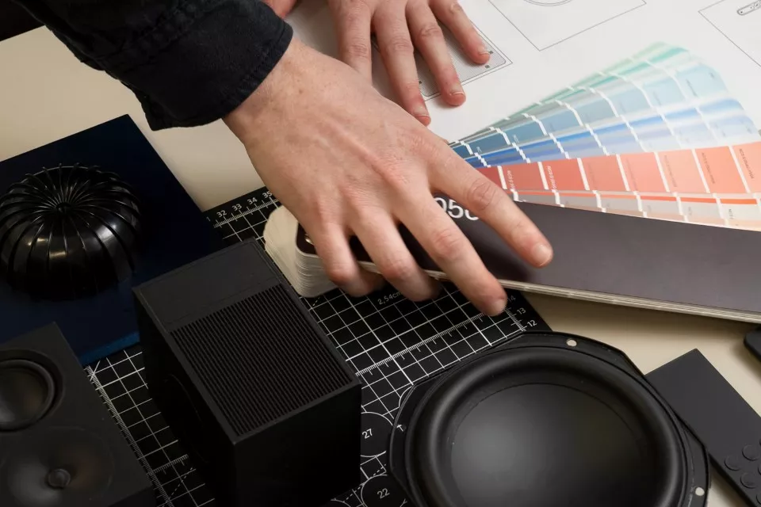
音楽から生まれ、日常のためにデザインされた
ロンドンのエンジニアが創り上げたL/R Sは、シンプルさ、デザインの明快さ、そして卓越したサウンドクオリティを融合。洗練され、柔軟で、音楽への愛情によって形づくられたこのスピーカーは、最も大切な瞬間に素晴らしいオーディオの喜びをお届けします。